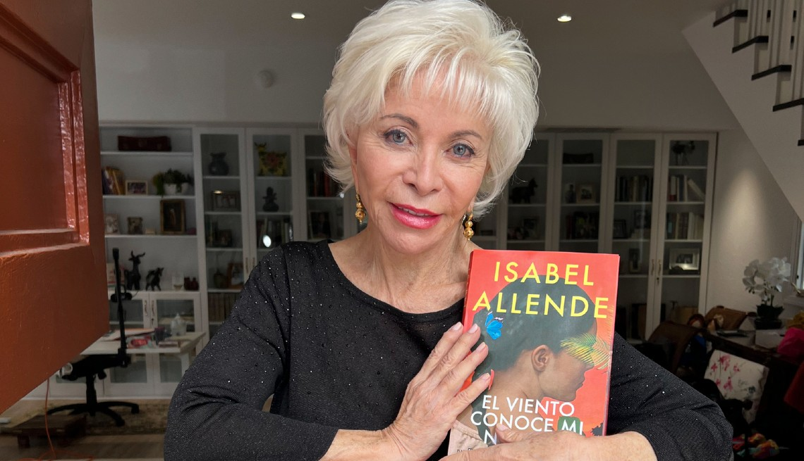

Isabel Allende

📚
Novels by Isabel Allende
(Chronological Order)
The House of the Spirits (1982)
La casa de los espíritus
Of Love and Shadows (1984)
De amor y de sombra
Eva Luna (1987)
The Stories of Eva Luna (1989)
Collection of short stories
The Infinite Plan (1991)
El plan infinito
Daughter of Fortune (1999)
Hija de la fortuna
Portrait in Sepia (2000)
Retrato en sepia
City of the Beasts (2002)
La ciudad de las bestias – YA fantasy/adventure
Kingdom of the Golden Dragon (2003)
El reino del dragón de oro – YA fantasy/adventure
Forest of the Pygmies (2004)
El bosque de los pigmeos – YA fantasy/adventure
Zorro (2005)
A fictional origin story of the legendary hero
Inés of My Soul (2006)
Inés del alma mía – Historical fiction
The Island Beneath the Sea (2009)
La isla bajo el mar
Maya's Notebook (2011)
El cuaderno de Maya
The Japanese Lover (2015)
El amante japonés
In the Midst of Winter (2017)
Más allá del invierno
A Long Petal of the Sea (2019)
Largo pétalo de mar
Violeta (2022)
A sweeping historical saga narrated by a woman born during the Spanish flu and dying during COVID-19
📝
Nonfiction / Memoirs
Paula (1994)
Memoir of her daughter Paula's illness and death
My Invented Country (2003)
Memoir about exile and Chile
The Sum of Our Days (2008)
Memoir and family story
The Soul of a Woman (2021)
Feminist reflections